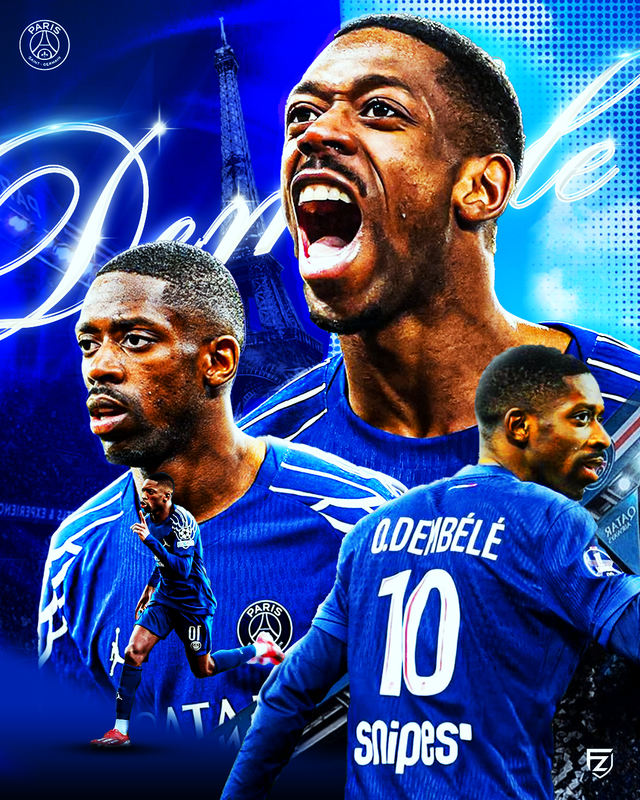
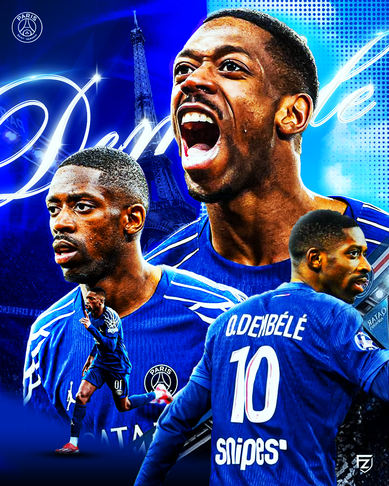
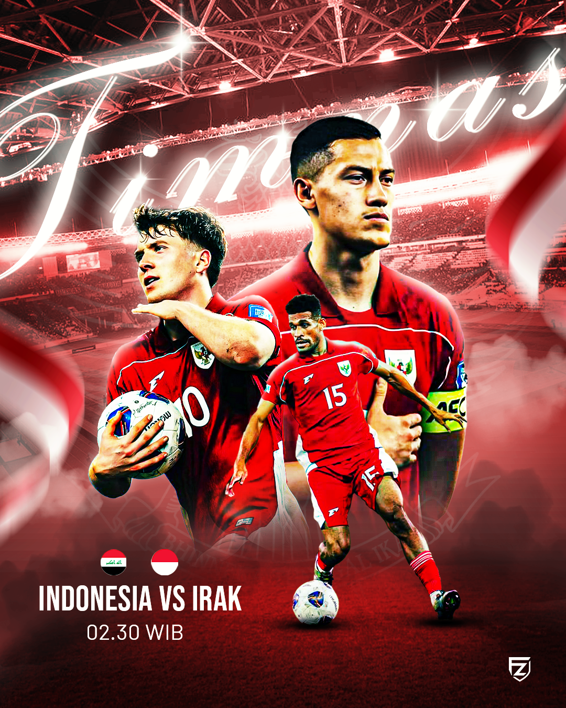
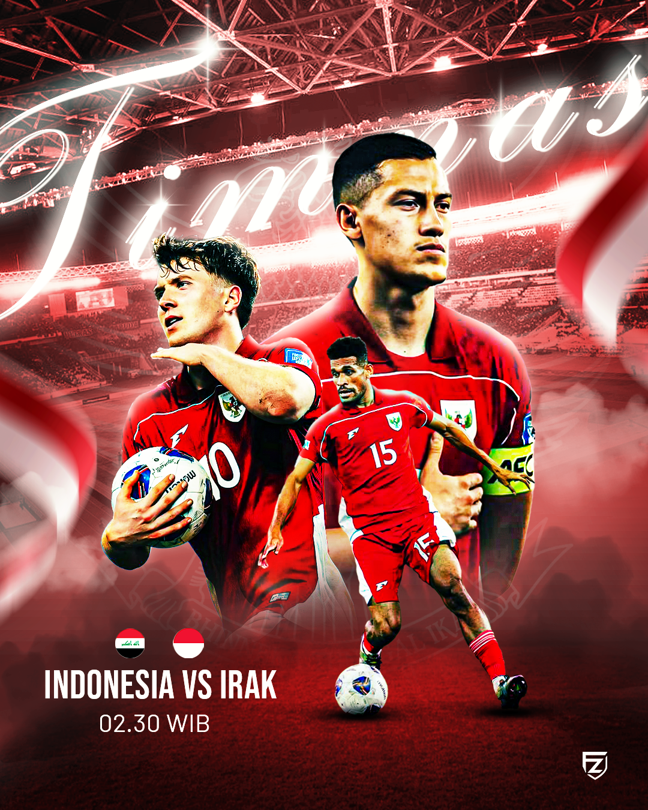
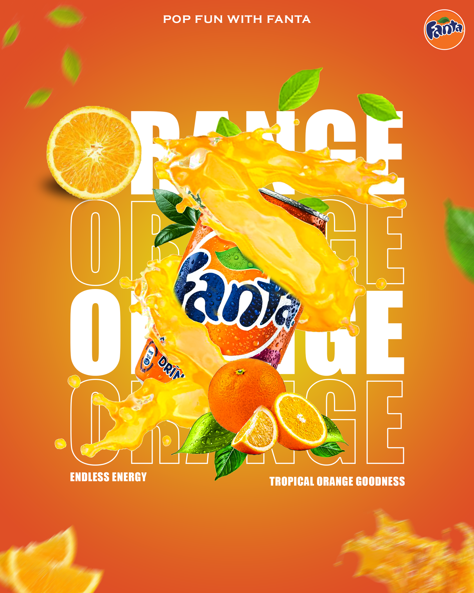
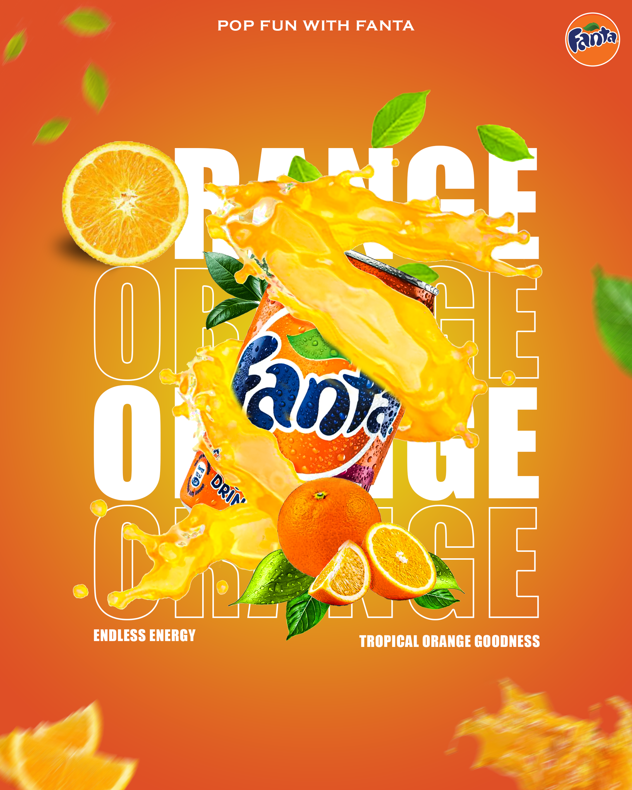

Tentang Fallen Ozora Raza

Halo! Saya Fallen Ozora Raza, seorang desainer grafis pelajar yang bersemangat dalam menciptakan visual yang kuat dan komunikatif. Saya berfokus pada desain yang tidak hanya indah secara estetika, tetapi juga efektif dalam mencapai tujuannya, baik itu untuk branding, media sosial, atau antarmuka pengguna.
Keahlian Utama:
- Desain Grafis : Mahir menggunakan Adobe Photoshop untuk membuat desain, poster, dan materi promosi.
- Desain UI/UX : Memahami prinsip dasar User Interface dan User Experience, dengan pengalaman menggunakan Figma untuk prototyping.
- Branding : Mampu mengembangkan identitas visual dan logo yang unik dan berkesan.
- Tipografi dan Layout : Fokus pada komposisi dan keterbacaan yang optimal.
Portofolio ini mencerminkan perjalanan dan eksperimen saya di berbagai bidang desain. Saya selalu terbuka untuk proyek baru dan kesempatan berkolaborasi.

 

 

 
